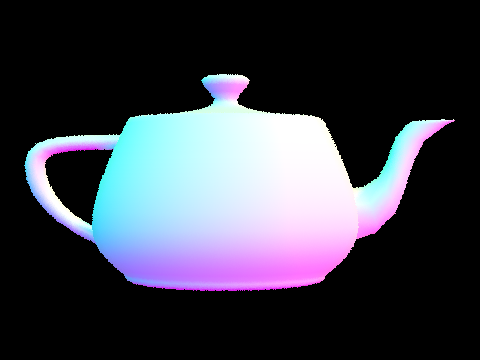

CS184/284A Spring 2025 Homework 3 Write-Up
Link to webpage: cal-cs184.github.io/hw-webpages-su25-awaldman0/hw3/index.html
Link to GitHub repository: github.com/cal-cs184/hw-pathtracer-updated-tomatoes
Overview
In this homework, I implemented several core features of a physically-based renderer that, by the end of the assignment, would be capable of rendering very realistic scenes using a path tracing algorithm. I began the assignment by implementing ray generation and basic ray-primitve intersection tests. Using the ray equation, I implemented the Moller Trumbore algorithm for ray-triangle intersection. Additionally, I applied the quadratic formula to calculate ray-sphere intersection. Next, I worked to implement Bounding Volume Hierarchies, an acceleration structure for ray tracing that partitions 3D space into a quickly traversable tree, allowing for massive speed improvements when calculating ray intersections in scenes with tens of thousands or hundreds of thousands of polygons. I then moved on, adding physically-based lighting to the renderer in the form of direct illumination. From there, I could extend the renderer's lighting capabilities to include indirect illumination as well, allowing me to produce images with incredibly realistic global illumination. Lastly, I worked to implement adaptive sampling, a way to optimize the rendering process by statistically determining when a pixel no longer needs to be sampled to improve/change its appearance. Of all the things I've built in this assignment, I was very impressed at the efficiency a BVH provides in a renderer, taking something that previously needed almost a minute to render to needing less than a tenth of a second. I really enjoyed stepping through the BVH in the visualizer mode, I feel like it really helped me when it came to determining my splitting heuristic. Overall, I'm pretty fascinated by the various optimization techniques employed throughout this assignment, especially the idea of adaptive sampling. I feel like this homework is also very extensible in that I could come back later to implement more interesting/complex features. Unfortunately, I did not have the time to figure out how to implement motion blur effects for extra credit, but I can absolutely see myself coming back to this assignment later to try and code that feature. This homework was definetly more complex than the previous ones, and I wish I had given myself a bit more time to work through each part so that I could avoid late-night debugging sessions, but I also appreciate how many parts of the core rendering loop we got to familiarize ourselves with.Part 1: Ray Generation and Scene Intersection
When ray tracing a scene, one must first generate rays to send out from the camera. When these rays collide with geometry, they can be used to calculate a variety of useful data points, including surface normals at the point of intersection and how much light is being emitted/reflected towards the camera. When generating rays, it's crucial to properly convert between camera space and world space to ensure that 1) the origin of each ray is actually within the boundaries of the current pixel we want to raytrace and 2) rays are being properly sent towards the scene (where all of the geometry is) instead of shooting off into an empty section of world space. I handled the logic for this section of part 1 in Camera::generate_ray(). Once rays are sent out from the camera, the next step in the core rendering pipeline is to check for intersections between each ray and the primitives in the scene. As mentioned previously, this step is incredibly important because it allows us to actually engage with the properties of the materials/primitives, which is how ray/path tracing is able to accurately light a scene.
I had a few options when it came to choosing an approach for calculating ray-triangle intersection. The first and simplest approach would be to use a point on the triangle and one of its normals to first test if the ray intersect with the plane the triangle lies on. If so, one can then use the t value at the intersection point to derive the coordinates of the intersection in world space. From there, you can do point-in-triangle tests (much like we did in Homework 1) to determine if the ray collides with a triangle. The second approach is to implement the Moller Trumbore algorithm for ray-triangle intersection presented in lecture. I chose to go with Moller Trumbore for a few reasons, the main one being speed. Compared to the first approach, Moller Trumbore involves fewer division, multiplication, and addition operations. When tracing billions of rays for a single scene, these small optimizations add up. The second main reason for using this algorithm is it derives barycentric coordinates in addition to the t value corresponding to the intersection point on the plane. From there, it's easy to verify if the intersection lies within the triangle by checking if the barycentric coordinates are non-negative. Having barycentric coordinates also allows us to easily interpolate between the triangles vertex normals, which is crucial for smooth shading. Had I chosen to use a different strategy for ray-triangle intersection, finding barycentric coordinates in 3D would prove to be a more difficult and computationally expensive task. I implemented Moller Trumbore in Triangle::intersect and Triangle::has_intersection as presented in lecture, perfroming a few additional checks to ensure the intersection point is located at a valid place along the ray. With basic ray-primitive intersection in place, I rendered the following images with normal shading.

|

|
|

|

|
Part 2: Bounding Volume Hierarchy
While ray intersection works fine for simple scenes with very little geometry, each intersection test iterates through every single primitive in order to determine if an intersection takes place, which is highly inefficient. This makes it all but impossible to render scenes with high polygon counts. One way to improve the performance of intersection tests is to partition 3D space with a Bounding Volume Hierarchy (BVH), a tree data structure that helps us only perfrom intersection tests in areas that a ray is actually traveling through. In order to improve the performance of my renderer for complicated scenes, I constucted a BVH in BVHAccel::construct_bvh(), which works as follows:
- Iterate between
startandend, expandingbboxto include every primitive in the list. As you're iterating, increment a variablesizeto keep track of how many primitive are in the current node. - If
size <= max_leaf_size, create a leaf node by settingnode->start = start,node->end = end,node->l = NULL, andnode->r = NULL -
If not, calculate the longest axis by finding
max(bbox.extent.x, max(bbox.extent.y, bbox.extent.z)). From there, sort primitives bewteenstartandendby their centroids along chosen axis. For example, if the x axis is the logest axis, callif (largest_extent == bbox.extent.x) { sort(start, end, [](Primitive* a, Primitive* b) { return a->get_bbox().centroid().x < b->get_bbox().centroid().x; }); } - From there, split around the median primitive and recursively call
construct_bvh()by settingnode->l = construct_bvh(start, start + (size / 2), max_leaf_size)andnode->r = construct_bvh(start + (size / 2), end, max_leaf_size)
When it came to my splitting heuristic, I wanted to ensure that the BVH was as balanced as possible, meaning traversing the tree would be efficient regardless of the ray's direction in 3D space. Splitting along the longest axis helps ensure that primitives stored in leaf nodes will also be close to each other in world space. This means that if a ray intersects the bounding box of a leaf node, it has a high liklihood of intersecting one of the polugons stored there. If I deciced to, say, split along the x axis every time, I could very well end up with leaf nodes containing primitives that are very far away from each other on the x and y axes, leading to sparsely populated bounding boxes where a ray is unlikely to intersect with a primitive even when it intersects the bounding box. Additionally, the choice to split along the median primitive instead of something like the average was done to keep the tree balanced. With BVH construction/traversal implemented in my renderer, I could now render very large .dae files with normal shading very quickly.

|
|

|

|
To explore how much a BVH improves rendering performance, I examined rendering times for three moderately complex .dae files with and without BVH acceleration to see how they compare. For each .dae file, I rendered an image at 800x600 resolution with and without BVH acceleration three times to get a sense for the average performance. For meshedit/cow.dae (5856 primitives), I could render an image in about 0.089 seconds with BVH acceleration and about 25.87 seconds without BVH acceleration. For sky/CBcoil.dae (7884 primitives), I could render an image in about 0.10 seconds with BVH acceleration and about 45.53 seconds without BVH acceleration. Lastly, for meshedit/beetle.dae (7558 primitives), I could render an image in about 0.079 seconds with BVH acceleration and about 38.71 seconds without BVH acceleration. Across those 3 files, I saw an average speedup of about 412x. You'll notice that having fewer primitives does not always mean something will render faster with BVH, as meshedit/beetle.dae rendered faster than meshedit/cow.dae despite having 1702 more primitives. I imagine this has something to do with the density of polygons in the mesh, although I cannot say for sure. Regardless, we can see that BVH acceleration affords us the ability to render extremely complicated scenes very quickly, and will serve a crucial role later on as renders become increasingly computationally expensive.
Part 3: Direct Illumination
The next thing to implement in my renderer was direct illumination, where we begine to simulate light transport in the scene. I implemented two methods of direct lighting for part 4, uniform hemisphere sampling and importance sampling. Direct lighting works by using a Monte Carlo estimator to approximate the amount of light arriving at a point. I wrote my implementation of direct lighting with uniform hemisphere sampling in estimate_direct_lighting_hemisphere, and it works as follows.
- Enter a for loop that executes
num_samplesiterations. - Sample an incoming ray direction
w_jin object space by callinghemisphereSampler->get_sample() - Create a ray
test_raywith originhit_pand directiono2w * w_j(sincehit_pis in world space). Setmin_ttoEPS_F. - Create a new intersection object
test_intersection -
If
this->bvh->intersect(test_ray, &test_intersection)- Get the amount of light being emitted by the piece of geometry
L_inby callingtest_intersection.primitive->get_bsdf()->get_emission(); - Set
Vector3D reflected_proportion = isect.bsdf->f(w_j, w_out)to find the proportion of incoming light the primitiveisect->primitivereflects - Set
Vector3D cos_j = dot(w_j, w2o * isect.n)to get the cosine of the angle bewteen the incoming light ray and the normal at the intersection point in world space. - Lastly, increment
L_outby(reflected_proportion * L_in * cos_j) / (1 / PI), with 1/PI being the pdf of the uniform hemisphere.
- Get the amount of light being emitted by the piece of geometry
- After exiting the for loop, normalize
L_outby dividing bynum_samplesand return it.
After implementing direct illumination with uniform hemisphere sampling, I moved on to write the code for direct lighting via importance sampling, which I wrote in estimate_direct_lighting_importance
- Enter a for loop that iterates through each light in
scene->lights -
If the light is a point light, do the following:
- Define
Vector3D wi,double distToLight,pdf, andVector3D L_in. SetL_inequal to the output oflight->sample_L(hit_p, &wi, &distToLight, &pdf) - Then, like before, define
test_raywith originhit_pand directionwi(the incoming direction is in world space this time) as well astest_intersection. Set the ray's minimum distance toEPS_Fand the max todistToLight. - If the ray does not intersect anything bewtween
hit_pand the light, incrementL_outby(reflected_proportion * L_in * cos_j) / pdf - Since all samples from a point light will be the same, we do not need to take multiple samples from this light, regardless of the number of light rays specified in the command line
- Define
-
If the light is not a point light, do the following:
- Define
Vector3D L_curr - Enter a for loop that performs
ns_area_lightiterations - In each iteration, perform the same steps we did for point lights, except this time increment
L_currby(reflected_proportion * L_in * cos_j) / pdf - After exiting the for loop, increment
L_outbyL_curr / ns_area_light
- Define
- return
L_out
With both methods of direct lighting implemented, we can see how they perform lighting a variety of images, each with 64 of samples per pixel and 32 samples per light

|

|
|
|

|

|

|
We can see that uniform hemisphere sampling results in a much noisier image than light sampling under the same conditions. This is due to the fact that uniform hemisphere sampling often results in sampling geometry that are not lights (so L_in is (0, 0, 0)), meaning pixels are generally accumulating less light and those that use light sampling. This is especially evident when you compare the brightness of the walls side-by-side. The random nature of uniform hemisphere sampling also results in very uneven lighting, as adjacent pixels may have sampled the light a different number of times. This uneven lighting also results in pretty poor representation of soft shadows. The renderings of dae/sky/CBcoil.dae at the bottom are especially good examples of this. In the rendering that uses light sampling, one can discern the curves of the coil in the shadow and clearly see three dark bands where the light is directly above the coil. In the other rendering, the shadow is a bit of a mess due to all of the noise. The use of light sampling allows for much better representation of light falloff. To further examine how light sampling allows for proper representation of shadows, we can look at renderings of dae/sky/dragon.dae with 1 sample per pixel and different number of light rays per pixel and examine how the fidelity of soft shadows improves as we add more light rays.

|

|

|

|
As you can see, the noise levels in the first two renderings make it incredibly difficult to spot the shaow cast by the dragon's head and neck. Only when we increase the number of light rays do pieces of geometry have the chance to gather enough light samples to differentiate bewteen areas that are directly lit from those in shadow.
Part 4: Global Illumination
While simulating direct lighting is fascinating, it doesn't quite properly represent how lights work in real life. For example, you'll notice that with direct lighting, the ceiling is completely unlit. To get more realistic lighting, we want to simulate multiple light bounces within our scene, which is called indirect lighting. My implementation for indirect lighting can be found in at_least_one_bounce_radiance() and it works as follows:
First, I made a quick change to raytrace_pixel, initializing the depth of newly created rays to max_ray_depth. Then, I moved on to at_least_one_bounce_radiance.
- Being that this function will call itself recursively, I began with a couple base cases. If the depth of the current ray is zero, return
zero_bounce_radiance(r, isect). Alternatively, if the depth is one, returnone_bounce_radiance(r, isect) - Define
double continuation_prob = 1(important for Russian Roulette later on),Vector3D wi, anddouble pdf. Then, callisect.bsdf->sample_f(w_out, &wi, &pdf)to take one random sample of a direction based on the BSDF at the current hit point. - If
isAccumBounces == true, meaning we want to accumulate every light bounce intoL_out, incrementL_outbyone_bounce_radiance(r, isect) - Next, we define
Ray new_ray = Ray(hit_p, o2w * wi), setting its minimum valueEPS_Fand its depth value tor.depth - 1. We also define an intersection structnew_intersection - If
new_rayintersects with something else in the scene andcoin_flip(continuation_prob)evaluates to true, incrementL_outbyat_least_one_bounce_radiance(new_ray, new_intersection) * isect.bsdf->f(w_out, wi) * dot(wi, w2o * isect.n) / pdf / continuation_probas presented in lecture - return
L_out
With indirect lighting now implemented, we can render images with full global lighting! The following images were rendered at 1024 samples per pixel, 8 light samples per area light, and 5 light bounces.

|

|
Since global lighting is a combination of direct and indirect lighting, we can compare what a scene looks like only direct illumination, then only indirect illumination. Since I showed dae/sky/CBspheres_lambertian.dae with full global lighting above, I thought it would be fitting to use that scene to help us compare/contrast.

|

|
As you can see, direct illumination contributes most of the darker shadows to the combined image, while indirect lighting gives us lighting on the ceiling and realistic looking color bleeding from the walls onto the spheres and the floor. Additionally, indirect illumination contributes when it comes to soft shadows, like those being casted by the spheres onto the walls. We can also utilize the isAccumBounces flag to visualize how much light each individual light bounce contributes to the overall image. Below, the top row of images shows what the 0th, 1st, 2nd, 3rd, 4th, and 5th light bounce look like in isolation when rendering dae/sky/CBbunny.dae, while the bottom row of images shows what the image looks like as we add light bounces together.

|
|

|

|
|

|

|
|

|
|

|

|
The 2nd and 3rd bounces of light are really what bring the rendering to life. The 2nd bounce gives us lighting on the ceiling and some of the darker areas on the wall, giving the image a huge boost when it comes to realism. Additionally, the seconds bounce alleviates the very hard shadows on the underside of the bunny left from the first round of lighting (direct illumination). The contributions of the 3rd bounce of light are a bit more subtle, but if you look at the top row, you can see that the 3rd bounce ends up reflecting a lot of the red and blue from the walls onto the bunny, helping the bunny look more grounded in the scene. Compared to part 3 where we relied solely on direct illumination, we can see that just simulating a couple extra bounces of light bring so much to the overall quality of the image by more accurately portraying the behavior of light in the real world.
In real life, however, there are innumerable light bounces happening at all times. It would be computationally infeasible to try to simulate all possible path lengths for light rays in a given scene, but we can implement a technique called Russian Roulette that randomly terminates rays based on an arbitrary continuation probability. In theory, this allows us to simulate any number of path legnths all in one scene. To turn on Russian Roulette path termination, all I needed to do was set the value of continuation_prob in at_least_one_bounce_radiance() to a suitable value. I chose 0.35, meaning we only execute the execute the recursive step of at_least_one_bounce_radiance() (i.e. keep tracing the ray) with probability 0.35. Below, we can see the effect of this technique when may_ray_depth is set to different values.
|
|
|
|
|

|
|
|

|
Lastly, we can explore the effect of different sample-per-pixel rates on scenes with global illumination enabled and Russian Roulette path termination in effect. Below, I've rendered dae/sky/wall-e.dae at a variety of sample-per-pixel rates with 4 light rays per area light and a max ray depth of 5.

|
|

|
|

|
|

|

|
Unsurprisingly, having a low number of samples per pixel leads to a very noisy image, especially when trying to render complex models like the one above. Using Russian Roulette for these render also contributes a bit of noise due to varying light path lengths from pixel-to-pixel, but the number of samples per pixel is by far the main factor when it comes to image quality. Details like the tread pattern on wall-e's tracks and the internal mechanisms of his wheels are very difficult to make out until we reach 64 or 256 samples per pixel. We're also unable to make out the soft shadows resulting from multiple light bounces in and around wall-e until we render at higher sample rates. There are unquestionable speed advatages when it comes to rendering things out at lower sampling rates, but for a scene like this where all of the viewer's focus lies on the subject, other renders simply cannot match the quality of 1024 samples per pixel.
Part 5: Adaptive Sampling
As is evident from the pictures of wall-e from above, increasing the number of samples per pixel is a surefire way to reduce the amount of noise in the final render. As we increase the number of samples per pixel, we increase the cost of computation for every single pixel on screen, regardless of the geometric complexity of our scene. In practice, a blank wall does not need to be sampled as many times as a complex, high-poly mesh in order to look realistic. One way to avoid this oversampling to use adaptive sampling, a technique that uses the mean and variance of a pixel's color value as the number of samples increases to determine when the pixel has converged, and no longer needs to be sampled. This way, we end up increasing the efficiency of our renderer by only sampling at high rates when it is absolutely necessary. In order to implement adaptive sampling, I needed to modify code I had written in raytrace_pixel() all the way back in part 1. My implementation works as follows:
- Before entering the for loop, define
float s1 = 0.0,float s2 = 0.0, andint samples_taken - Every iteration of the for loop, increment
s1by the illuminance of the color just sampled, increments2by the illuminance squared, and setsamples_taken = i + 1 -
If
samples_taken > 1 && samples_taken % samplesPerBatch == 0, calculate whether or not the current pixel has converged by doing the following calculations explained in the spec:if (samples_taken > 1 && samples_taken % samplesPerBatch == 0) { float mean = s1 / samples_taken; float var = (1 / (samples_taken - 1)) * (s2 - ((s1 * s1) / samples_taken)); float I = 1.96 * (sqrt(var / samples_taken)); if (I <= maxTolerance * mean) { sampleBuffer.update_pixel(color / samples_taken, x, y); sampleCountBuffer[x + y * sampleBuffer.w] = samples_taken; return; } } - If the function completes the for loop, the pixel did not converge prior to reaching
ns_aasamples, so updatesampleBufferandsampleCountBufferas in part 1
Unfortunately, my implementation had a bug somewhere that I was unable to iron out before the assignment dealine, although I suspect it has something to do with my implementation of est_radiance_global_illumination. As a result, I was not able to produce images for this section.